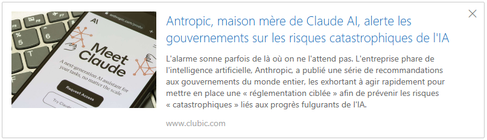

Les prévisions d'Elon Musk
- Yan Fleuran - 05 novembre 2024
- Intelligence artificielle
- Youtube Yan Fleuran
Interview vidéo d'Elon Musk en direct de Riyad - 29 octobre 2024
Source
Au cours de cette interview Elon Musk a abordé de nombreux sujets et ses prédictions sont stupéfiantes :
La vidéo fait 23 minutes, c'est pourquoi j'ai résumé les prévisions pour le moins étonnantes du patron de Space X, de Tesla, de X, de Neuralink, etc. Elon Musk livre une prestation commerciale et partisane, après l'élection américaine, où il expose ses opinions conservatrices sur la réglementation, la natalité, éborgne au passage Caitlyn Jenner, et les IA woke de San Francisco. Le discours est militant et un peu décousu, mais néanmoins instructif. J'ai sélectionné les points où il s'engage sur des chiffres, où il donne des prévisions.
L'intelligence artificielle
Il prévoit une croissance de la puissance de l'intelligence artificielle de 100 fois par an. Pour Elon Musk, l'IA atteindra le niveau de l'intelligence humaine d'ici 1 à 3 ans. En 2029, l'IA devrait atteindre une capacité d'intelligence dépassant celle de tous les humains combinés. A la question de la dystopie, connaissant les alertes de Geoffrey Hinton, il répond qu'il vaut mieux être optimiste et qu'on a 80 % de chances que ce soit prodigieux, il promet une aire d'abondance où les IA et les robots supporteront le PIB et que chacun pourra accéder aux produits et aux services qu'il désire pour des coûts marginaux faibles, au sein d'une société post-capitaliste, où chacun aura un revenu élevé et non de base, et, dans le pire des cas, il y a 20 % de chances pour que ce soit un désastre total. Et il ajoute également que l'IA est une menace existentielle majeure, à court terme, à surveiller de près. A la question comment éviter que ça tourne mal avec les IA, il ne répond pas techniquement, mais dit que son conseil d'instinct est d'entraîner un modèle qui cherche la vérité au maximum, il rappelle que l'IA adopte la philosophie des gens qui l'entraîne et il dénonce les IA woke de San Francisco, qu'il qualifie de nihiliste. Je vous laisse voir la vidéo. Il préconise aussi de façonner une IA qui aime l'humanité. "Does love humanity " dans le texte. Il aborde aussi la question des méga clusters comme Colossus, et on parle de 100 000 cartes graphiques Nvidia, d'une valeur de 5000 $ chacune, interconnectées par fibres optiques. Leur voracité en énergie, est à la mesure de la puissance de ces supercalculateurs. Il rappelle aussi que l'IA est une technologie complexe, qu'il ne s'agit pas de déballer un ordinateur, mais d'entraîner un modèle de pointe qui demande des ressources support technologiques et énergétiques très importantes.
La robotique
Les prévisions d'Elon Musk sont qu'en 2040, le nombre de robots humanoïdes sera peut-être supérieur au nombre de personnes vivantes sur Terre. Il l'estime à peu près à 10 milliards de robots. Quant au prix de ces robots, il pense qu'un robot polyvalent coûtera dans les 20 000 à 25000 $, et d'ailleurs pour le robot Optimus de Tesla, il envisage une production limitée en 2025, et en volume dés 2026.
La conquête martienne
Il rappelle qu'une fenêtre s'ouvre tous les 26 mois, et qu'il pense, non pas envoyer des humains, mais les premiers vols de matériels sur Mars avant 2030.
Tesla et les voitures autonomes
Le Cybercab la navette autonome, sans volant ni pédale, il estime que dans quelques années la flotte sera de 100 millions de véhicules, et qu'elles sauveront 1 million de vie par an.
Mon commentaire
Pour vous livrer mon sentiment, ce qui m'a surpris c'est qu'il ne parle pas du tout de l'impact de l'informatique quantique sur le développement des IA, certes il doit le prendre en compte mais n'en parle pas du tout. D'ailleurs le bruit court que l'informatique quantique peine encore à démontrer sa fiabilité alors que les IA, seront rapidement capables de réaliser les simulations attendues de la part de l'informatique quantique. A mon avis dans ces prédictions, les impondérables sont négligés. Nombres de découvertes seront faites grâce aux IA. Et le mystère de la conscience sera-t-il résolu ? Ce qui a pour conséquence qu'on ne peut pas vraiment faire de prédictions "toutes choses égales par ailleurs" parce qu'on va découvrir de nouvelles connaissances, ou rencontrer de nouveaux problèmes, qui vont changer la donne. Je trouve que c'est un des enseignements de la Science-Fiction. On ne peut pas prédire l'avenir en projetant des asymptotes ou des lignes droites parce qu'il y a toujours une rupture, une nouvelle découverte qui fait changer la direction de la tangente. Par exemple il s'attache aussi à dénoncer la menace que constitue la baisse du taux de natalité mondiale dans plusieurs blocs, européens et asiatiques en particulier, la crise démographique le préoccupe. Cependant L'IA ne nous promet-elle pas de trouver un remède au vieillissement, (déjà expérimenté sur les animaux qui reconstitue les télomères). Cela devrait endiguer la dépopulation, qu'il semble craindre. Ou évoquer la dépopulation fait peut-être juste partie d'un argumentaire justifiant ses prises de positions politiques ? Il n'a pas évoqué de règles concrètes, concernant l'IA, il est contre la réglementation, il a d'ailleurs été chargé de démnteler la bureaucratie Biden par Donald Trump. Alors que le dernier acteur ayant appelé de ses voeux un cadre juridique, n'est autre que Anthropic l'éditeur de Claude AI. oui, il manque un h, dans le titre de l'article

Des incohérenses
La seule règle de base, qu'il préconise est de concevoir une IA qui aime l'humanité, oui cela m'a beaucoup surpris. Car j'aurais préféré dévouée à l'humanité. L'amour et la haine sont des sentiments humains et très partiaux. Le fait qu'il emploie un champ lexical sentimental pour parler des IA me pousse à ne pas trouver cela très crédible, alors que je le tiens pour un chef d'entreprise de formation scientifique. Et il faut reconnaître que ce qui est fait avec SpaceX est magnifique, donc je suis très surpris par la teneur de cette interview, à la fois par le côté militant et par le manque de technicité, et de même par rapport aux prouesses de Space X, lorsqu'il les évoque et qu'il dit, pour plaisanter, "Quand l'IA regardera ça, peut-être qu'il se dira pas mal pour des singes" cette petite remarque humoristique contraste tellement avec le côté militant et conservateur de cette interview, ça semble paradoxal qu'il ne se considère pas comme une créature de Dieu, un credo conservateur, et qu'il fasse ce genre de blague. Bref cette intervention m'a laissé perplexe. A vous d'en juger

- Vincent Lautier - 25 octobre 2024
- Mac4Ever - Divers
- Mac4ever.com
Source
OpenAI veut lancer un modèle 100 fois supérieur à GPT-4 d'ici décembre
OpenAI prévoit de lancer Orion, son modèle d'intelligence artificielle avancé, d'ici décembre. Avec un potentiel de puissance jusqu'à 100 fois supérieur à GPT-4 (rien que ça), Orion représente une étape vers l'atteinte de l'intelligence artificielle générale
Un lancement progressif avec un accès limité
Le prochain modèle d'OpenAI, baptisé Orion, pourrait révolutionner une fois de plus le domaine de l'intelligence artificielle en dépassant les capacités des modèles précédents. Contrairement aux lancements de GPT-4 et de GPT-4.5, disponibles dès leur sortie viaChatGPT, Orion sera d’abord accessible à des partenaires privilégiés d'OpenAI. Microsoft, partenaire stratégique, devrait intégrer ce modèle sur sa plateforme cloud Azure dès novembre, offrant aux entreprises l'opportunité de développer des produits et des services basés sur cette technologie avancée. Cette distribution progressive pourrait permettre d’optimiser les performances d’Orion avant une diffusion plus large.
Une puissance inégalée pour un pas vers l’AGI
OpenAI ambitionne de faire d'Orion une avancée majeure en matière de modélisation de langage, avec une capacité de traitement jusqu'à 100 fois supérieure à celle de GPT-4. Cette puissance vise non seulement à améliorer la génération de texte, mais aussi à s'approcher de l'intelligence artificielle générale(AGI). Pour rappel, l’AGI se définit comme une IA capable de comprendre et de résoudre des problèmes complexes au même titre qu'un humain. La stratégie d’OpenAI consiste à fusionner ses différents modèles de langage pour, à terme, atteindre cette intelligence unifiée.
Financement et restructuration
La sortie d'Orion accompagne une transformation structurelle d’OpenAI, qui vient de lever 6,6 milliards de dollars, valorisant l'entreprise à environ 157 milliards de dollars. Cette levée de fonds, principalement menée par Thrive Capital et renforcée par des contributions de Microsoft, Nvidia et SoftBank, soutiendra la recherche avancée et l’augmentation de la capacité informatique de l'entreprise. Dans le cadre de cette nouvelle phase de croissance, OpenAI a également annoncé une transition vers une structure à but lucratif pour mieux capter des fonds et répondre à la concurrence croissante d’acteurs comme Anthropic AI.

Départs de dirigeants et réorganisation interne
Ce financement massif arrive alors qu’OpenAI connaît une vague de départs au sein de sa direction, y compris celui, très médiatisé, de la directrice technique Mira Murati, qui a contribué aux progrès d’OpenAI dans la modélisation de langage et la recherche IA. D’autres cadres, tels que le directeur de la recherche Bob McGrew et le vice-président de l’optimisation Barrett Zoph, ont également quitté l’entreprise pour poursuivre d’autres projets. Cette restructuration, bien que sous pression, semble alignée avec les objectifs à long terme d'OpenAI : continuer de développer une intelligence artificielle de pointe et renforcer son statut de leader technologique.
Le lancement d'Orion est donc une étape cruciale pour OpenAI, mais c’est aussi une percée technologique qui pourrait inquiéter les nombreux détracteurs de l’intelligence artificielle en général. Quel regard portez-vous sur les pas de géants faits quotidiennement par toutes ces technologies ?